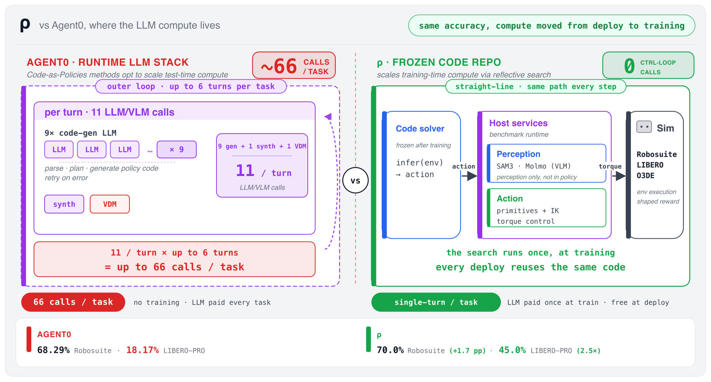
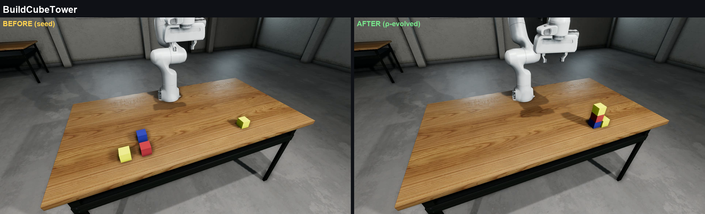
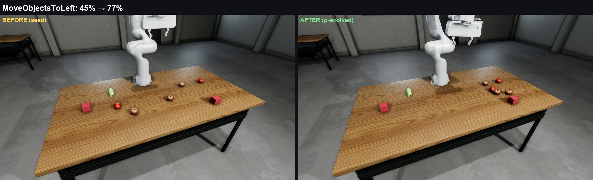

RHO (Robotics Harness Optimization) unlocks tool-enabled LLM coding agents to unleash their inner roboticist. Through reflective evolutionary search, it writes and rewrites a robot's control code in simulation until the code itself solves the task, reaching state of the art among Code-as-Policies methods.
70.0%Single-turn deployment with no corrective LLM code edits
Prior systems kept a language model in the loop to edit code during deployment
Recent CaP systems rely on iterative code generation loops at test time, often leaving them
unsuitable for real-time robotics tasks.
66
Model calls per attempt, at the top end, in the prior CaP-Bench record on Robosuite (CaP-Agent0). Every call adds delay and inference cost.
Past research: a model in the loop
Corrects itself mid-rollout (multi-turn)
CaP-Agent0 issues up to 66 LLM calls at test-time per trial
68.29% to 24% without multi-turn scaffolding
→
Robotics Harness Optimization
Shifts the compute burden from test-time to training-time
Ships a frozen, readable codebase you can inspect
Same action primitives, higher success rate
02The flip
The idea
Let a coding agent write and rewrite the robot's code until it works.
RHO hands the job to a tool-enabled coding agent and lets it practice in a simulator through reflective evolutionary search: it edits, runs, and debugs whole programs against a scalar reward, keeping the variants that help. The end product is one self-contained multi-file code repository. Because the final product is just code, you can read it, debug it, and reuse it. (For experts: this relocates the model's expensive search out of deployment and into a one-time training phase, so what ships on primitive-only benchmarks are frozen Repositories-as-Policies.)
RHO system overview. A parent repository is sampled from a
validation-scored Pareto frontier and mutated by a tool-enabled coding agent that edits multiple
files and runs candidates in an isolated workspace with whitelisted access to the robot
environment. Children that beat their parent on a paired minibatch are validated and added to
the frontier; the best-mean-reward repository is deployed.
1
Run
A candidate repository runs in the simulator, earning a reward plus detailed feedback on what went wrong.
2
Rewrite
The repository and that feedback go to the coding agent, which mutates many files at once.
3
Keep the winners
A child is kept only if it beats its parent on a paired minibatch of trials (the acceptance gate).
4
Build a library
The best variants are retained as a diverse library, a Pareto frontier over task coverage, not a single greedy chain.
Unlike prior reflective optimization methods which optimize only a single prompt, function, or delimited code region, RHO optimizes entire multi-file repositories of code at once.

Where the work happens. The strongest competing system makes up to 66 model
calls per attempt while the robot runs. RHO makes zero such calls during the task on CaP-Bench,
yet beats the prior CaP-Bench record (CaP-Agent0, multi-turn) on Robosuite (70.0% in one shot vs 68.29% with up to 66 calls) and
does 2.5x better on LIBERO-PRO (45.0% vs 18.17%). For experts: RHO moves the costly trial-and-error
into a training-time search, then ships the result as a frozen codebase.
30%→70%
A single coding agent (single-turn), no matter how long it is allowed to think, tops out at just
30.0% on the held-out tasks. The reflective evolutionary loop is what lifts the same model and
tools to 70%. The loop is the method, not just the agent.
03The payoff
The proof
A frozen codebase, run single-turn, still reaches state of the art.
Click a task. Watch the robot run the code.
A single execution of the candidate repository, no VDM, and no LLM code-generation calls.
Cube lifting
reward 1.000
A single execution of the candidate repository, no VDM, and no LLM code-generation calls.
70.0%70.0% (490/700) under single-turn S4 deployment.
0 vs 660 LLM code-generation calls in the control loop, vs up to 66 per CaP-Agent0 trial.
2.3xRHO's evolved solver beats a single-shot Codex baseline 2.3x (490/700 vs 210/700).
CaP-Bench LIBERO-PRO: 45.0% handling changes better than VLAs without demonstrations
LIBERO-PRO: per-cell success rate (%), higher is better
Dashed line = RHO overall average (45.0%). OpenVLA and
π0 score 0.0% on every cell (bars sit on the axis).
Hover, focus, or tap a bar for the exact value.
Show the underlying numbers (data table)
Success across six perturbation types (object, goal, and spatial, each as a swap or a paraphrase; 3,000 single-turn trials). With no corrective model edits, RHO outperforms the vision-language-action (VLA) models and the prior Code-as-Policies system.
45.0%RHO success (1351 of 3000), within 63 generations.
0.0%OpenVLA
12.83%π0.5 average
18.17%CaP-Agent0
3.5× over π0.52.5× over the strongest agentic baseline0 demos used
End-to-end VLAs crater under LIBERO-PRO's reasonable perturbations (OpenVLA and π0 hit 0.0%), while RHO holds at 45.0%, 3.5x better than π0.5
This contrast is scoped to LIBERO-PRO (perturbed): task-level and position perturbations that test generalization beyond the standard LIBERO training distribution.
Same libero-spatial task ("pick the black bowl on the cookie box, place it on the plate"), same task-level perturbation; π0.5 fails, RHO succeeds.
RHO45.0%1351 / 3000
π0.512.83%3.5x lower
OpenVLA0.0%perturbed setting
On standard LIBERO, OpenVLA and π0.5 both score over 90.0%; under LIBERO-PRO's perturbations OpenVLA scores 0.0% and π0.5 scores 12.83%.
Watching the code teach itself
Reflective evolution · CaP-Bench Robosuite
From near-zero to a working solver within 200 generations.
Keyboard: Tab to a point, ←/→ to scan generations,
Home/End to jump, Esc to dismiss.
View the data as a table (87 accepted candidates)
Mean shaped reward per accepted candidate, by generation, with the best-by-validation running maximum.
candidate
generation
mean reward
best-by-validation
note
Per-task best-by-train mean reward vs generation
7 Robosuite tasks · 87 accepted candidates · the deployed solver is selected by validation at generation 134. These curves are best-by-train running maxima of mean shaped reward on the 10 training trial IDs, distinct from the held-out per-task success counts: five tasks reach training reward 1.0, two_arm_lift plateaus near 0.73, and nut_assembly stays near 0.06.
··
Lines are best-by-train running maxima, so each curve is non-decreasing.
Hover, focus, or tap a line for the exact value.
Keyboard: Tab to a line to hear its task and final reward; use the legend buttons to toggle lines. A full data table is below.
Show data table (all 87 generations × 7 tasks)
Best-by-train mean reward per task at each accepted generation.
RAI O3DE: RHO optimizes deployed robotic LLM harnesses too
Here the deployment is multi-turn: a language-model agent keeps running while the robot works.
Rather than write standalone code, RHO optimizes the agent's harness: its system prompt and the
bodies of its tools (the agent's control interface). On the hard held-out split, success nearly
doubles from 23.5% to 44.3% (p < 0.001, 3-run average), while using 27% fewer tool calls and
20% less wall-clock time (single representative run; the sign holds under the 3-run average).
23.5%→44.3%held-out hard-split success
27% fewer tool calls20% less wall-clock time
GroupObjects: from total failure (0.0%) to 37.5% on the hard split, a zero-to-something unlock from repository-level mutation.

BuildCubeTower, before and after RHO optimization.

MoveObjectsToLeft, before and after RHO.PlaceCubes, before and after RHO.
Why rewrite the whole codebase
On Robosuite, mutating a full multi-file repository wins in fewer generations (200 vs 250), and far outperforms rigid structured representations (behavior trees and finite-state machines).
Multi-file repository (200 gen)
70.0%
Single-file stub (250 gen)
63.86%
Behavior trees
33.86%
Finite state machines
18.14%
Only the top two bars share the same backend (Codex GPT-5.5). The behavior-tree baseline used Claude Sonnet 4.6 and the finite-state-machine baseline used Qwen3.6-27B, so the gap to those two bars reflects model capability as well as representation, not a pure structure-only comparison.
What's still hard
The best near-miss on nut-assembly (trial 11, reward 0.006). High-precision insertion is
the fine-geometry ceiling RHO inherits from its driving LLM.
Aggregate gains come with per-task tradeoffs. RHO is below the
multi-turn baseline on object-swap on LIBERO-PRO (12.2%) and on cube_restack and
two_arm_lift on Robosuite, and nut_assembly remains an open challenge for both
RHO and the baseline.
04Try it
Run it yourself
The output is just code. Read it, debug it, reuse it.
Karim Elmaaroufi, Justin Svegliato, Sarunas Kalade, Graham Schelle, Sanjit A. Seshia, and Matei Zaharia.
"RHO: Your Coding Agent is Secretly a Roboticist." arXiv:2606.16458, 2026.
@misc{elmaaroufi2026rho,
title = {{$\rho$}: Your Coding Agent is Secretly a Roboticist},
author = {Elmaaroufi, Karim and Svegliato, Justin and Kalade, Sarunas and Schelle, Graham and Seshia, Sanjit A. and Zaharia, Matei},
year = {2026},
howpublished = {arXiv preprint},
eprint = {2606.16458},
archivePrefix = {arXiv},
primaryClass = {cs.RO},
url = {https://arxiv.org/abs/2606.16458},
note = {Robotics Harness Optimization (RHO)}
}